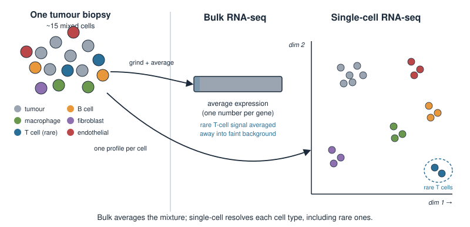
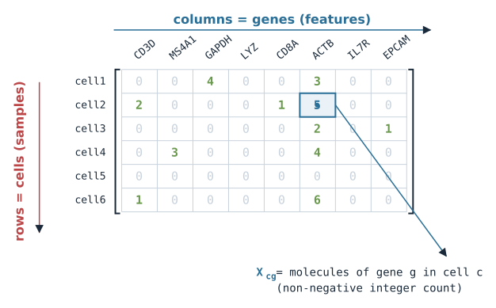
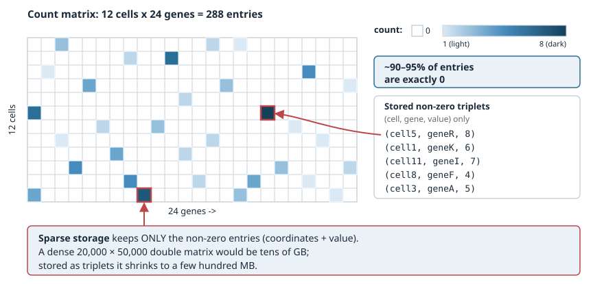
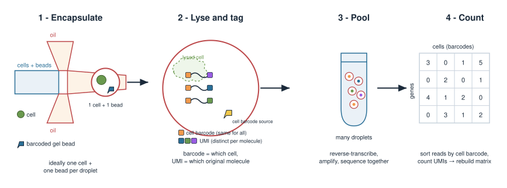
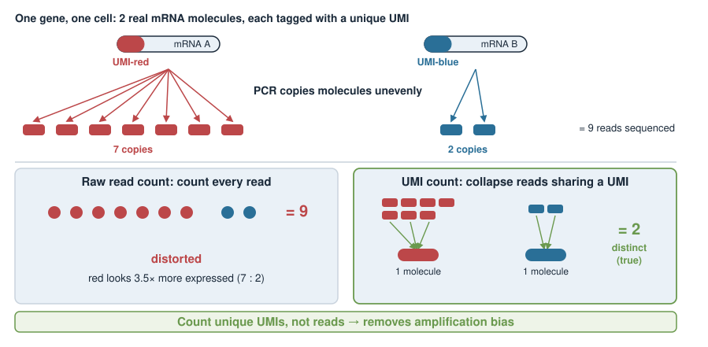
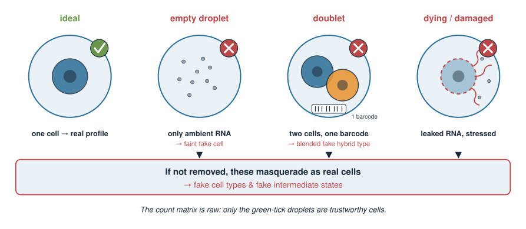
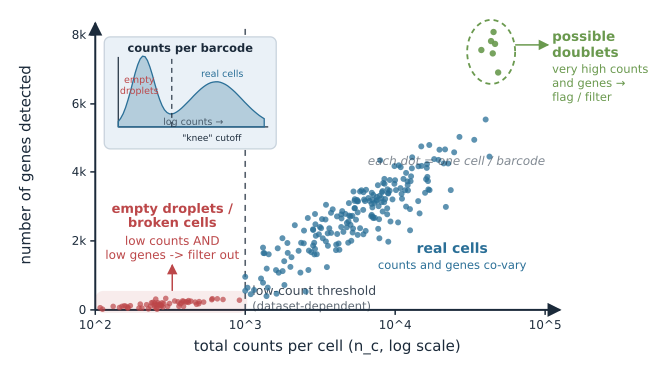
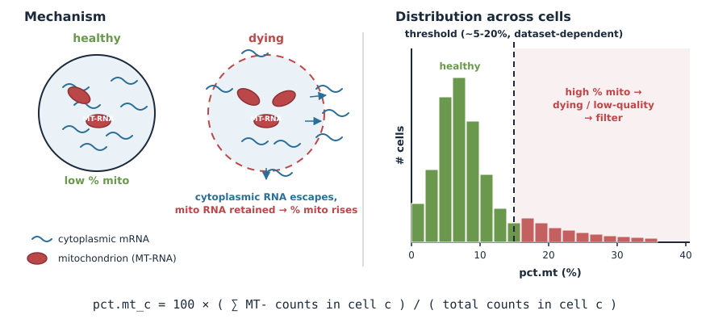
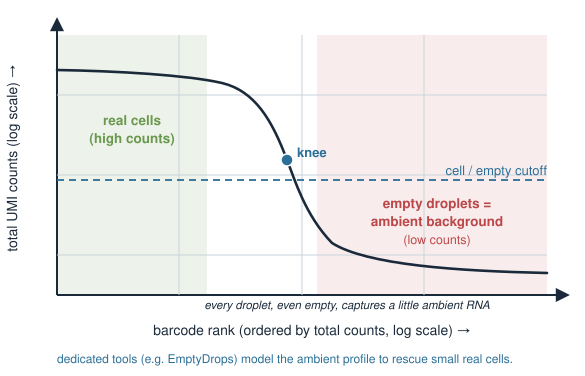
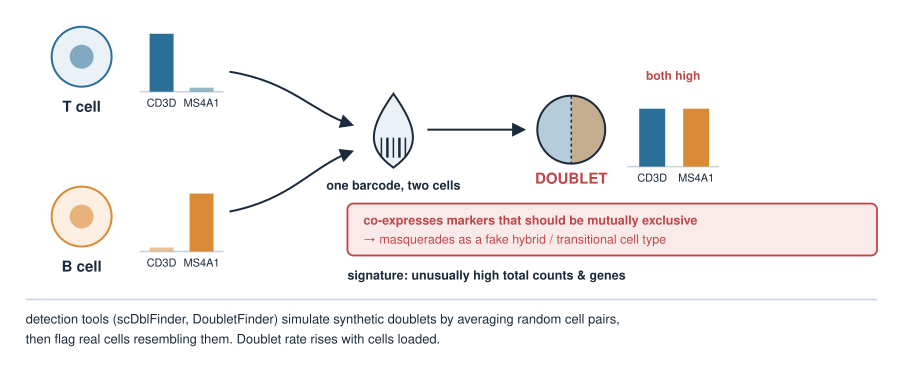

Single-cell analysis — Single-cell RNA-seq: data & QC
Quantitative biology and integrative omics
About this lecture
Until now a gene-expression experiment gave you one number per gene per sample — a bulk average over millions of cells. Single-cell RNA-seq gives you one number per gene per cell, for thousands of cells at once. That changes both the biology we can ask and the data structure we handle.
The data object: a sparse cells × genes count matrix, mostly zeros.
Where the numbers come from: the droplet workflow, at a high level.
Why the counts are noisy and sparse, and what that forces us to do.
Quality control: removing low-quality cells, empty droplets, and doublets.
Preprocessing: normalization, log transform, and picking highly variable genes.
This is a concept + data-handling day. No new by-hand math; the log transform gets its own unit next (Log and pseudolog transforms), and the linear algebra payoff (PCA, UMAP) comes after that, in Dimensionality reduction & clustering.
A biology picture first
A tumour biopsy is not one thing. It is tumour cells, immune cells (T cells, B cells, macrophages), fibroblasts, and endothelial cells — all mixed together.
Bulk RNA-seq measures the average expression across all of them. A gene that is high in a rare T-cell population but absent elsewhere looks like faint background.
Single-cell RNA-seq measures each cell separately, so you can ask: which cell types are present, in what proportions, and what is each one doing?
The biological question — what cell types make up this tissue, and how do they differ? — is only answerable if we can read out expression one cell at a time.

The data: a cells × genes count matrix
The output of a single-cell experiment is a table of counts:
rows = cells (often 1,000–50,000+),
columns = genes (often ~20,000 for human/mouse),
entry \(X_{cg}\) = the number of RNA molecules of gene \(g\) detected in cell \(c\) (a non-negative integer count).
Same sample × feature shape you met with bulk expression tables — just with cells as the samples, and a lot more rows.

It is mostly zeros: sparsity
Most entries in the matrix are exactly 0. Typically 90–95% of the matrix is zero.
Two reasons a zero appears:
Biological: the gene is genuinely not expressed in that cell.
Technical (“dropout”): the gene is expressed, but its few molecules were not captured or sequenced — a false zero from limited sensitivity.
We usually cannot tell the two apart from the count alone. Because so few molecules are sampled per cell, single-cell data is sparse and noisy by nature.
Practically, we store it as a sparse matrix (only the non-zero entries) — a dense \(20{,}000 \times 50{,}000\) table of doubles would be tens of gigabytes.

Where the counts come from: droplets
The dominant technology (e.g. 10x Genomics) is droplet-based. High level:
A microfluidic chip pairs single cells with barcoded gel beads inside tiny oil droplets — ideally one cell per droplet.
The cell is lysed; each captured mRNA is tagged with that droplet’s cell barcode (which cell) and a UMI — unique molecular identifier (which original molecule).
All droplets are pooled, reverse-transcribed, amplified, and sequenced together.
Computationally, reads are sorted by cell barcode back into cells, and UMIs are counted to rebuild the count matrix.

Why UMIs matter
Sequencing involves a PCR amplification step that copies molecules unevenly. Without correction, a gene that happened to amplify well would look highly expressed.
A UMI is a short random barcode attached to each original mRNA molecule before amplification.
After sequencing, all reads sharing the same UMI (and cell barcode and gene) came from one original molecule — so we count them once.
Counting unique UMIs instead of raw reads removes most amplification bias, giving counts that better reflect the true number of molecules captured.

The count matrix is raw — it needs cleaning
The matrix that comes off the pipeline is not ready for analysis. Two big problems, both from the “one cell per droplet” ideal breaking down, plus general quality issues:
Empty droplets: a droplet with no cell still captures stray ambient RNA → a “cell” that is really background.
Doublets: two cells share one droplet → one barcode that mixes two cells’ expression.
Low-quality cells: dying or damaged cells (leaked cytoplasm, stressed).
If we skip QC, these masquerade as real cells and create fake cell types and fake intermediate states downstream. QC is not optional bookkeeping — it protects every conclusion that follows.

QC signature 1: counts and genes per cell
For each cell we compute two simple numbers:
total counts (library size): \(n_c = \sum_g X_{cg}\) — total UMIs in the cell.
number of genes detected:\(\#\{g : X_{cg} > 0\}\) — how many distinct genes are non-zero.
Interpreting the extremes:
Very low on both → an empty droplet or a broken cell with little RNA. Filter out.
Very high on both → possibly a doublet (two cells’ worth of RNA). Flag / filter.
These are cheap, per-cell summaries — the first thing you look at.

QC signature 2: mitochondrial fraction
Compute the fraction of each cell’s counts coming from mitochondrial genes (in human, gene symbols starting MT-):
When a cell’s membrane is compromised (dying/stressed), cytoplasmic mRNA leaks out, but mitochondrial mRNA stays trapped in mitochondria.
So a high mitochondrial fraction is a hallmark of a low-quality / dying cell. Filter cells above a threshold.
The threshold is dataset-dependent (a common starting point is ~5–20%), and some healthy tissues are genuinely mito-rich — so inspect, don’t blindly apply.

Empty droplets and the ambient RNA problem
When cells are lysed during prep, some mRNA floats freely in the suspension — ambient RNA. Every droplet, even an empty one, captures a little.
A droplet with no cell yields a low-count profile that is just ambient background.
Ranking barcodes by total counts shows a sharp “knee”: real cells (high counts) drop off steeply to the empty-droplet background (low counts).
Simple low-count filtering removes the obvious empties; dedicated tools (e.g. EmptyDrops) model the ambient profile statistically to rescue small real cells and remove background.

Doublets
A doublet is one barcode that captured two cells. Its expression is a blend of two profiles.
Why it is dangerous: a doublet of a T cell and a B cell expresses both T-cell and B-cell markers — it can masquerade as a novel “hybrid” cell type or a fake transitional state.
Signatures: unusually high total counts / genes; co-expression of markers that should be mutually exclusive.
Detection: dedicated tools (e.g. DoubletFinder, scDblFinder) simulate artificial doublets by averaging random pairs of cells, then flag real cells that resemble those simulations.
Doublet rate scales with how many cells you load — more cells per run means more collisions.

After filtering: normalization
Cells differ in total counts just from technical capture efficiency, not biology — one cell might have 2,000 UMIs and another 20,000. Comparing raw counts across cells is unfair.
Library-size normalization: divide each cell’s counts by its total, then rescale to a common size (a “scale factor”, e.g. 10,000):